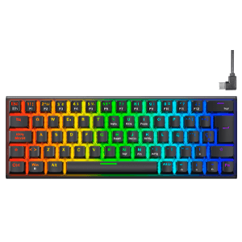
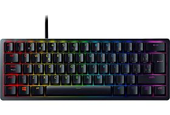

01
Eliges la base
Alumio o policarbonato, en cuatro colores. La base marca el peso y el sonido.
TECLA
montaje a mano · envio en 72 h
Eliges la carcasa, los switches y las teclas. Nosotros lo montamos, lo lubricamos y lo probamos tecla a tecla antes de meterlo en la caja


TECLA 65% en acabado Nebula, con teclas PBT.
Modelo 65%
189 €
Carcasa de aluminio fresado, montado en junta y 68 teclas. Viene montado, lubricado y probado, listo para escribir nada más sacarlo de la caja.
Cada teclado se monta a mano. Tarda entre 3 y 5 días laborales en salir del taller.
EL PROCESO
Alumio o policarbonato, en cuatro colores. La base marca el peso y el sonido.
Los probamos contuigo en el taller o te mandamos un muestrario con nueve modelos.
Switch a switch, con espuma en tres capas y estabilizadores ajustados.
Ninguna sale del taller sin pasar el test completo. Te mandamos el informe.
QUE LO HACE DISTINTO
Un bloque de aluminio 6063 mecanizado. Pesa 1,12kg y no se mueve de la mesa.
La placa apoya sobre juntas de silicona. El teclado cede un poco al pulsar.
Poron bajo la placa, PET entre capas y espuma en el fondo. Sin eco metálico.
USB-C para el escritorio y Bluetooth 5.1 para hasta tres equipos guardados
Doble inyección: la leyenda es plástico, no pintura. No se borra con el uso.
Cambias cualquier tecla desde el navegador. Sin instalar nada en el equipo.
FICHA TÉCNICA
Diseño compacto de 65%, pensado para quien quiere espacio y comodidad al escribir.
Carcasa de aluminio con acabado premium y una sensación sólida al tacto.
Switches lineales, táctiles o clicky según el tipo de uso y el sonido que prefieras.
Teclas con perfil bajo y curva ergonómica para una escritura más natural.
USB-C para escritorio y Bluetooth para conectar con varios dispositivos.
Autonomía de varias semanas con uso diario moderado y carga USB-C.
Diseño ligero y estable, con un peso pensado para uso diario y movilidad.
Garantía de 2 años sobre el montaje, la estructura y el funcionamiento del teclado.
QUIEN YA ESCRIBE CON UNO
Llevaba años con un teclado de oficina. La diferencia está en el sonido: es grave y seco, no repica.
Nayra D. · Las Palmas
Pedí los switches táctiles después de probar el muestrario. Acertaron con la recomendación.
Ruben P. · Valencia
Me cambiaron el mapa de teclas para programar y me mandaron el archivo por si lo quiero editar.
Alba S. · Bilbao
DUDAS FRECUENTES
Sí. Todos los modelos llevan zocalo, así que se sacan y se ponen a mano, sin soldar nada.
Con switches lineales y espuma de serie es más silencioso que un teclado de membrana.
Sí. Hay un interruptor físico en la parte de atrás para cambiar la distribución.
Te mandamos la pieza suelta. Las teclas y los estabilizadores se venden por separado.
Montamos 40 teclados al mes. Deja el correo y te escribimos el día que abrimos pedidos.